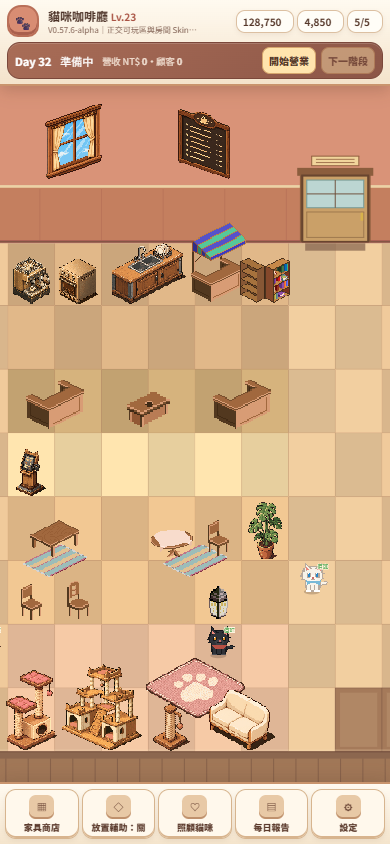
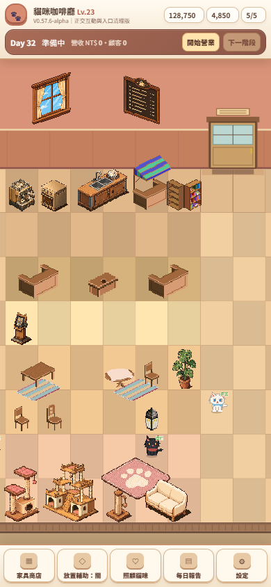
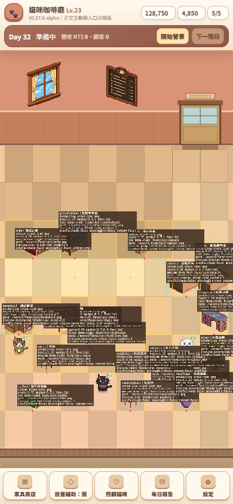
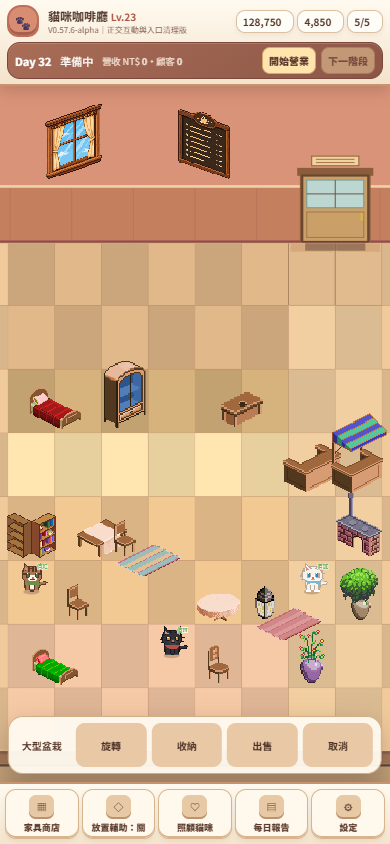
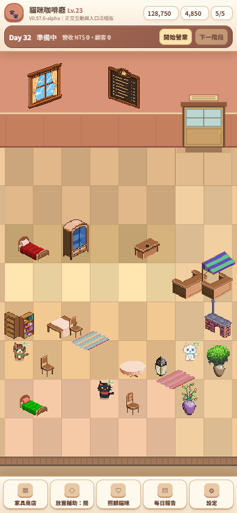
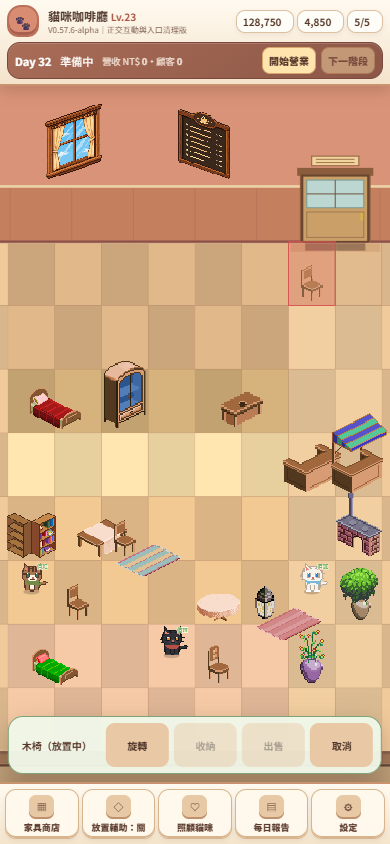
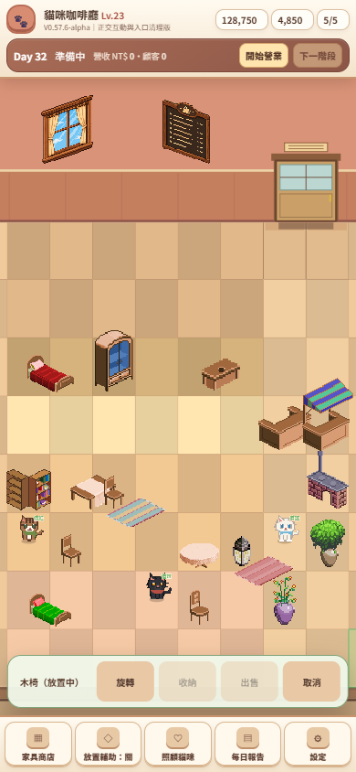

V0576B 正交互動、框架與入口清理
所有 after 圖片由安裝版 Chrome 實際啟動 Phaser 後直接截圖；沒有後製遊戲畫面。
窄框架

0576a：厚重外框。

0576b：手機初始視角約 12.8–15.3 CSS px。
入口 mask
 0576a：入口邏輯與視覺分離。
0576a：入口邏輯與視覺分離。

0576b：Art Debug 顯示正式上方入口 `(7,0)/(8,0)`。
觸控與邊界

選取後 context toolbar。

真實 touch Cancel 後 selection 與工具列清除。

新入口為紅色保留區。

舊底部入口格已合法可放。